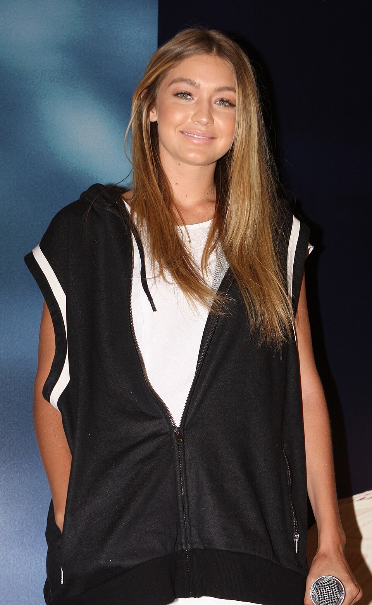
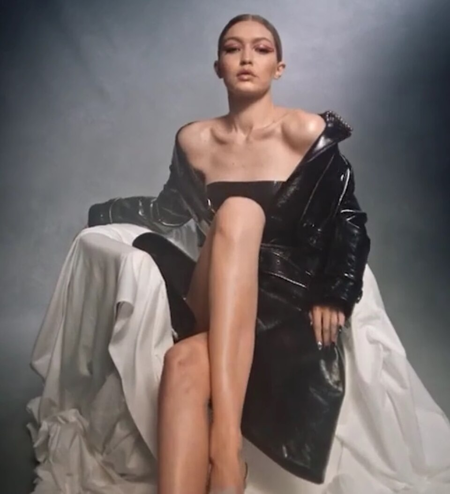
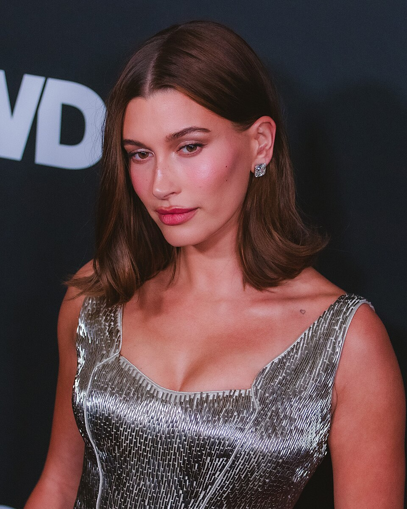
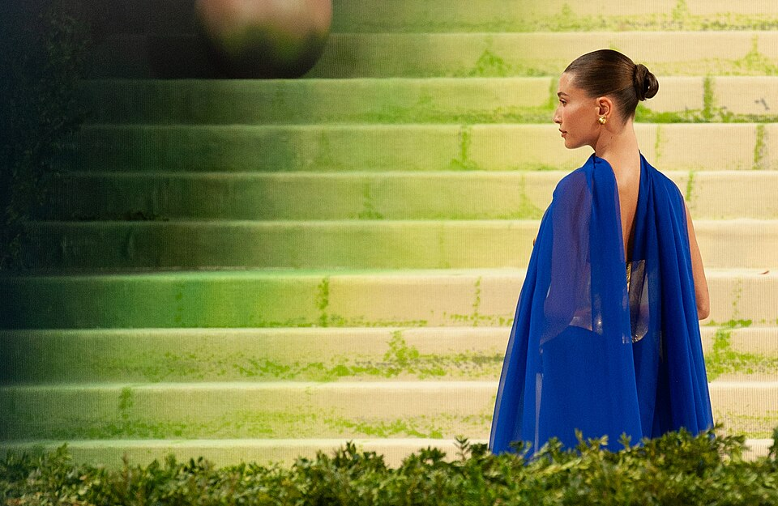
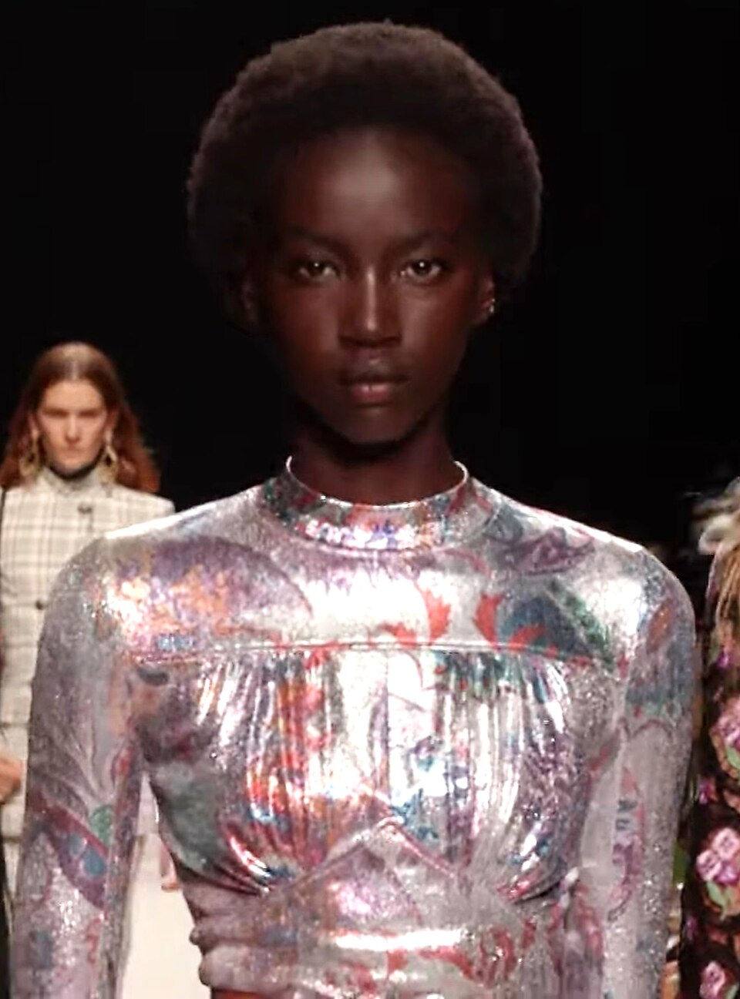
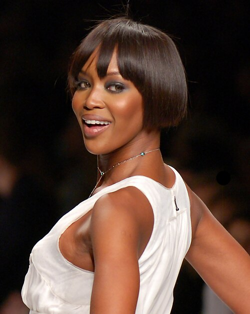
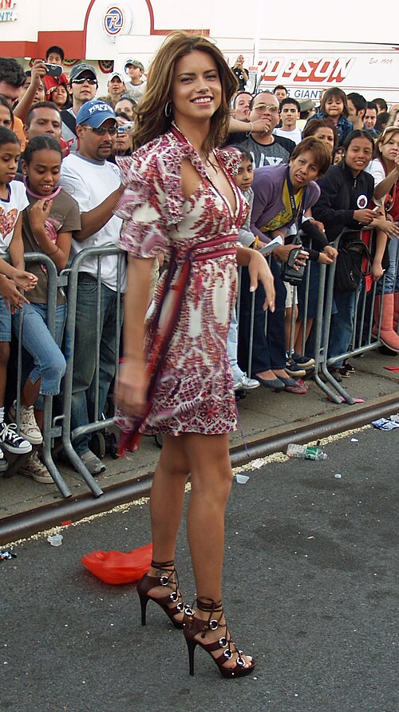
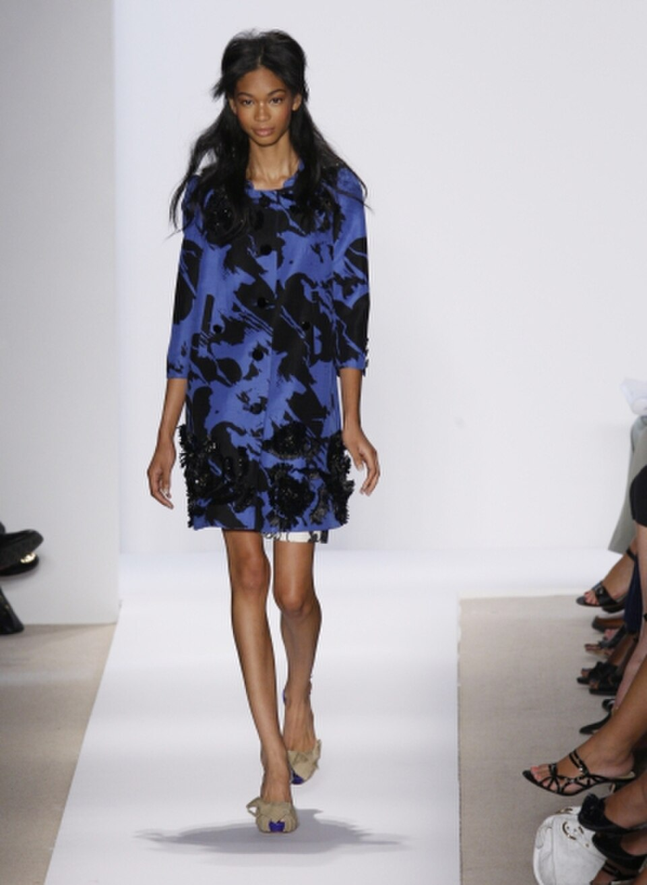
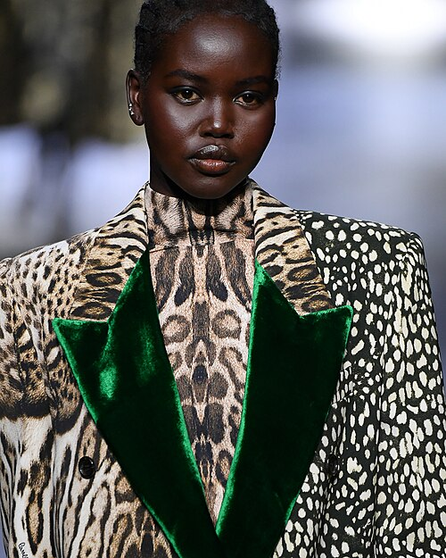

Female Model Profiles
Gigi Hadid
 Gigi Hadid — Rabanne fashion presentation.
Gigi Hadid — Rabanne fashion presentation.
|

Gigi Hadid, 2015.
Image source.
|

Gigi Hadid at the 2026 Met Gala.
Image source.
|
Birth year: 1995
Nationality: American
Career: International runway, editorial and fashion campaign model.
Career highlights: Worked with major fashion houses and appeared in international fashion publications.
Memorable moment: Her appearance at the Chanel Spring/Summer 2020 show became widely discussed after a runway interruption.
Hailey Bieber
 Hailey Bieber — American model.
Hailey Bieber — American model.
|

Hailey Bieber at the 2026 Met Gala.
Image source.
|

Hailey Bieber at the 2026 Met Gala.
Image source.
|
Birth year: 1996
Nationality: American
Career: Fashion model and media personality.
Career highlights: Appeared in fashion campaigns, magazine editorials and runway presentations.
Fashion influence: Known for her appearances in contemporary fashion campaigns and public fashion events.
Anok Yai
 Anok Yai — Sudanese-American model.
Anok Yai — Sudanese-American model.
|

Anok Yai at the 2026 Met Gala.
Image source.
|
Birth year: 1997
Nationality: Sudanese-American
Career: International runway and editorial model.
Career highlights: Walked for major fashion houses and became recognized in international fashion photography.
Fashion influence: Known for her work in high-fashion runway shows and campaigns.
Naomi Campbell
 Naomi Campbell — British supermodel.
Naomi Campbell — British supermodel.
|

Naomi Campbell at Cannes, 2017.
Image source.
|
Birth year: 1970
Nationality: British
Career: International fashion model with a career spanning several decades.
Career highlights: Worked with leading designers, appeared on major magazine covers and walked in important runway shows.
Memorable moment: Her famous Vivienne Westwood platform-shoe runway fall in 1993 became an iconic fashion moment.
Adriana Lima
 Adriana Lima — Brazilian fashion model.
Adriana Lima — Brazilian fashion model.
|

Adriana Lima at Cannes, 2015.
Image source.
|
Birth year: 1981
Nationality: Brazilian
Career: International runway, advertising and fashion campaign model.
Career highlights: Known for her long association with Victoria's Secret and her work with international fashion brands.
Memorable moment: Returned to the Victoria's Secret Fashion Show in 2024.
Iman
 Iman — Somali-American model and entrepreneur.
Iman — Somali-American model and entrepreneur.
|

Iman — portrait photograph.
Image source.
|
Birth year: 1955
Nationality: Somali-American
Career: Model, entrepreneur and fashion industry figure.
Career highlights: Worked with international designers and photographers and later established a beauty business.
Fashion influence: Recognized for her contribution to fashion and representation in the modeling industry.
Adut Akech
 Adut Akech — South Sudanese-Australian model.
Adut Akech — South Sudanese-Australian model.
|

Adut Akech at Roberto Cavalli Fall/Winter 2022.
Image source.
|
Birth year: 1999
Nationality: South Sudanese-Australian
Career: International high-fashion runway and editorial model.
Career highlights: Walked for major fashion houses and appeared in international fashion publications.
Fashion influence: Recognized for her work in luxury fashion campaigns and runway presentations.


.jpg){kind=link}

.jpg){kind=link}